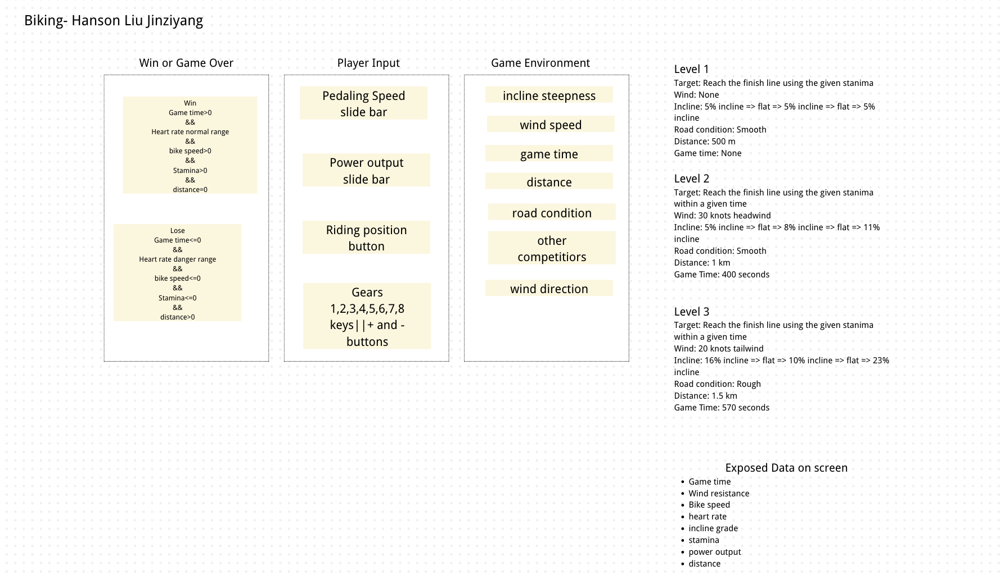

To the End
A biking game about reading the road, not just pedaling harder.
Play the GameGame Idea
Project Title: To the End
Student / Team: Hanson Liu
Domain: Biking
Most people think biking uphill is about forcing the pedals as hard as possible. In this game, you control a rider on a road with changing inclines, wind, and road conditions. Your goal is to reach the finish line before time runs out, without running out of stamina or pushing your heart rate into the danger zone.
Player goal: Reach the finish line of each challenge while keeping a steady heart rate, enough speed, and enough stamina.
Core learning shift: Beginners think biking uphill means pedaling hard to force their way up; experts know biking uphill means reading the incline and adjusting the gear, pedaling speed, and power in relation to it.
Domain Knowledge
Real experience: Riding a bike up a hill shows that speed does not only come from pedaling fast. Gravity on an incline, wind resistance, gear choice, and riding position all work together.
Novice misconception: Beginners think they have to maintain a fast pedaling speed by using a lot of power. They often forget to adjust gears, use too much energy at the start, or try to keep spinning fast on steep sections.
Expert judgment: Experienced riders shift to an easier gear before a steep climb, keep a steady cadence, change position to reduce wind resistance, and manage power so their heart rate stays under control.
Why it becomes playable: The game turns these invisible forces into visible numbers and bars. When stamina drops fast or heart rate spikes, the player sees the feedback and can experiment with different gears, positions, and power levels.
System Design
The system graph below shows how environment data, player input, and calculated results connect.

Environment Data
- Incline steepness of each road segment
- Wind speed and direction (headwind / tailwind / none)
- Remaining distance to the finish line
- Road condition (smooth or rough)
- Other competitors (visual atmosphere)
Player-Controlled Data
- Pedaling speed (cadence)
- Power output
- Riding position (normal or leaning forward)
- Gear selection (1 to 8)
System-Calculated Results
- Bike speed
- Stamina drain rate
- Heart rate
- Wind resistance force
Feedback
- Stamina: shown as a bar that turns from green to yellow to red.
- Heart rate: shown as a number that turns red and pulses when it is too high.
- Bike speed: shown through movement and the speed value.
- Incline: shown visually by slanted road segments with percentage labels.
Success and Failure
- Win: Reach the finish line while time, stamina, and heart rate are still safe.
- Lose: Run out of time, run out of stamina, let heart rate stay too high for too long, or stop moving completely.
Challenge Presets
- Level 1: 500 m, smooth road, no wind, small inclines. Learn the basic gear-incline relationship.
- Level 2: 1 km, smooth road, 30-knot headwind, larger inclines, 400-second time limit.
- Level 3: 1.5 km, rough road, 20-knot tailwind, very steep inclines, 570-second time limit.